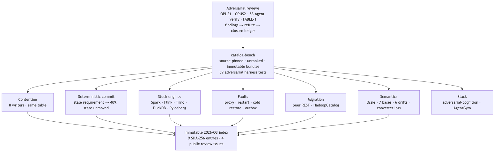

LakeCat was developed under three successive full-repository adversarial reviews, each re-verifying the previous one’s open findings against the current tree and recording closure or persistence.
The first (OPUS1) examined an uncommitted scaffold of about 6,100
Rust lines across nine crates and returned a verdict the project adopted
as its bar: “the seams are right, the Iceberg-spec reuse is genuine, but
the catalog is not yet a catalog.” Every endpoint hardcoded an anonymous
principal; commit_table bumped an integer in a map with no
metadata file, no CAS, no idempotency or audit; and “push work into
Sail” meant reusing Sail’s structs in-process rather than delegating to
its planner [63].
The second (OPUS2), roughly eighty commits later at about 15,500
lines, found “an authenticated, durably-committing, CAS-correct,
governance-gated Iceberg REST catalog with an in-process Sail provider
and a CLI,” closed nine of the twelve OPUS1 findings, and moved the
frontier to a sharper question: the governed read path gated
access but did not yet mask data, because
plan_table_scan minted a capability and then planned with
the client-supplied projection [54]. The narrow-never-widen path of §7.5
is the closure of that finding.
The third pass, on June 25, 2026, used twelve parallel reviewers over
the book, project documents, and all ten crates, with two lenses on the
service crate; every gap or bug finding was then handed to an
adversarial verifier whose job was to refute it, a synthesis
step consolidated survivors, and a completeness critic looked for what
the reviewers had missed—about 53 agents in all. Findings were graded
confirmed, partial, or
unverified, and refuted findings (for example, “createTable
breaks first commit under a non-/tmp profile,” “Vault
client leaks the secret-ref URL”) were dropped rather than reported
[64]. Confirmed high-severity findings included two feature builds that
no longer compiled against sibling APIs, map-typed REST fields
serialized as JSON arrays (breaking stock PyIceberg, Spark, and Trino at
the /config call), default-build commits that silently
dropped updates, and a bare x-lakecat-principal header that
defaulted to a trusted human principal.
FABLE-REVIEW-1, on July 3, 2026, re-verified every open finding in
three parallel passes (security/identity, REST conformance, docs/release
state) at about 124,000 lines across eleven crates [52]. It recorded the
closure of the REST-conformance cluster—object-shaped maps,
listTables, Iceberg ErrorModel types, and the
default build now rejecting what it cannot apply—together with
the human-reviewability refactor (no source file above about 2,400
lines, tests in separate files) and the concurrency work of §7.3. It
also recorded that the security cluster remained open (§10), and it
found two red feature gates during the review itself, which produced a
process rule: per-change gates must include the feature matrix, not only
the release gate.
The method’s value is not that reviews find bugs; it is that a refutation pass and a closure ledger make findings evidence rather than opinion, and that the ledger’s open rows constrain what the paper may claim.
The neutral harness lives in a separate repository,
querygraph/catalog-bench [65], because “a benchmark
repository that compares several catalogs must not be owned by one of
the implementations under test” [62]. Its contract
(catalog-bench/v1) defines Rust algebraic data types, JSON
Schemas, and semantic validators for scenarios and results; every result
is exactly one of pass, fail,
unsupported, or not-tested; the public matrix
is generated from typed records rather than maintained by hand; raw
evidence is immutable and corrections create a superseding bundle; and
performance eligibility is a derived view, never a fifth correctness
outcome. Impartiality invariants are mechanical: every catalog writes
its Iceberg metadata.json to the same MinIO bucket on the
same Docker network, performs the same unit of work, and has every
request error recorded. Transcripts are recursively sanitized—OAuth
credentials, bearer tokens, vended storage credentials, secret-shaped
response fields, opaque page tokens, raw response bodies—and each bundle
carries a secret scan and per-file SHA-256 indexes. Fifty-nine
adversarial tests of the harness itself (15 commit, 14 config, 13
namespace, 17 table) cover optional limitations, collisions, metadata
drift, pagination defects, response bounds, OAuth secrecy, and cleanup
after failed assertions.

Figure 5. Adversarial pressure is applied twice: to the design, through reviews whose findings must survive refutation, and to the running system, through a neutral harness whose evidence is immutable.
The commit path is where a catalog earns its keep and where
microbenchmarks of query engines never look. The contention scenario
issues set-properties commits with no data files, so each
request exercises validation, a fresh metadata.json, CAS,
and durable persistence and nothing else: 50 warm-up commits, 1,000
sequential commits, then eight barrier-synchronized writers on one table
for six seconds, over one conditioning and five measured rounds with
rotated execution order.
In the production sweep of August 27, 2026 (LakeCat at
962f43cb, Polaris 1.7.0, Gravitino 1.3.0, Lakekeeper
0.13.3, Nessie), LakeCat led the passing catalogs at 147.5
accepted concurrent commits/s (range 144.1–153.4), ahead of
Polaris at 58.1/s and Gravitino at 56.8/s; Lakekeeper and Nessie were
unranked fail because their measured rounds contained
non-conflict server errors (Lakekeeper: PostgreSQL “deadlock detected”
surfacing as 503s; Nessie: 106 HTTP 500s from a
ContextNotActiveException) [65]. Across the measured rounds
LakeCat recorded 32,408 attempts, 4,474 accepted commits, 27,934
conflicts, and zero request errors—a conflict rate of
85.9%, which is the expected result of eight writers racing one
pointer (a perfectly synchronized group of eight yields 7/8 = 87.5%),
not a storage-error rate. Every accepted commit performed the full
spine: pointer CAS, pointer log, audit, outbox, and idempotency,
fsynced. Nessie’s faster raw value (190.0/s in the historical August 8
import) remains visible as diagnostic timing rather than being hidden or
misreported as a conflict.
The path to those numbers is itself evidence about the engine contract. The first honest LakeCat medians were nearly twice the Java catalogs’, and the cause was neither Rust nor catalog logic (well under a millisecond) but two missing connection-reuse habits: an S3 client rebuilt on every commit (p50 12.6 → 6.8 ms once cached per bucket) and a Turso connection opened with pragmas re-applied on every write (6.8 → 4.14 ms once pooled, still one distinct connection per concurrent writer so MVCC concurrency was unchanged). Rust did not win the benchmark by itself; on an I/O-bound, fsynced commit loop against a warm JVM, runtime speed barely registers. What Rust keeps is what a warm steady-state benchmark hides—no GC pauses, steadier tails, small resident footprint, instant cold start.
Contention answers how much work survives a race; it does not prove
that one specific stale request is rejected atomically. The
deterministic C1-06 runner does: it creates schema 0, admits a matching
property transition, admits schema 1, submits a request still asserting
schema 0, requires the exact Iceberg 409
CommitFailedException envelope, and independently reloads
the table to prove UUID, pointer, schema, last field id, and the
complete property map did not move, resolving all 16 referenced metadata
objects in MinIO. LakeCat, Gravitino, and Polaris passed all ten
required assertions; Lakekeeper and Nessie passed nine—both rejected the
request and preserved state, but Lakekeeper reported
CatalogCommitConflicts and Nessie left the error type
empty. Lakekeeper alone advertised a standard idempotency lifetime, and
its same-key/different-content retry returned the cached 200 rather than
409 (the drifted value did not become current): a disclosed
content-binding defect. LakeCat does not advertise
idempotency-key-lifetime, so the neutral runner made no
idempotency claim for it—internal retry machinery does not become a
cross-client claim until the service advertises the profile and passes
its exact-replay and content-binding branches end to end.
“Stock” means each engine used its released Iceberg REST integration
with no LakeCat-aware shim. The table-lifecycle conformance run (C1-05,
Iceberg 1.11 REST OpenAPI) evaluates 15 required
assertions—authentication without persisted credentials, config
negotiation, spec-shaped NoSuchNamespace on preflight,
distinct UUIDs on create, exact listing, load fidelity, loop-free
pagination, property commits that advance the pointer while preserving
everything unmentioned, 409 AlreadyExists, 404
NoSuchTable, 404 NoSuchNamespace, non-purging
drop, reconciled cleanup, and a credential-free transcript—plus two
optional (rename, register). Four catalogs passed 15/15; Nessie 14/15
(HTTP 200 with an empty page for an absent namespace). Defects found on
the way were fixed at their owner: LakeCat’s no-snapshot rename returned
500 (“snapshot id must be non-negative”), and the runner had silently
omitted a declared table location.
The Phase 1 behavioral bundle over five scenarios and five catalogs produced 25 independently validated result records: 20 pass, 5 fail. A stock PyIceberg 0.11.1 round trip against all five catalogs retained 135 Iceberg objects across 20 distinct metadata locations, all found by direct MinIO inspection.
Phase 2 ran one common engine scenario—namespace and table round
trip, an initial append read back exactly, schema evolution, an evolved
append read back exactly, catalog state correlated with independent REST
reads, shared-object evidence complete, fixture clean, transcript
sanitized—14 required assertions per cell—with stock Spark 4.1.3, Flink
2.1.3, Trino 483, and DuckDB 1.5.3 (Iceberg 1.11.0) against LakeCat,
Polaris 1.7.0, Gravitino 1.3.0, and Lakekeeper 0.13.3. All sixteen
catalog–engine cells passed all fourteen assertions (224 assertion
evaluations, a derived figure). The campaign was diagnostically
productive in exactly the engine-contract sense: Spark exposed
catalog-owned field-id assignment and multipart-namespace decoding;
Trino exercised default warehouse-location construction and bounded gzip
metadata; DuckDB exposed staged table creation and spec-correct
add-spec decoding. The REST and catalog behaviors were
fixed in LakeCat; the reusable Iceberg update semantics were fixed in
Sail; no client-specific wire shim was introduced. The governed
Sail-planned QGLake path in the same phase delivered 26 admitted lineage
events, and LakeCat and QueryGraph independently computed the same
aggregate OpenLineage hash. The stock-engine bundles make no
engine-native lineage claim.
Phase 3 built a benchmark-owned HTTP reverse proxy that injects two deterministic faults: before-upstream closes the client connection without forwarding, and after-upstream forwards the request, consumes the full upstream response, records its status, and closes the client connection before returning anything; injection counts up to 1,000 defeat client retries. Against MinIO, before-upstream left the client disconnected with no upstream status and the object absent; after-upstream left the client disconnected, an upstream HTTP 200, and the object present. This is the ambiguous-commit problem made observable: a disconnected client cannot infer whether an operation committed, and the two cases must be distinguished by independent state, not by the response.
The recovery scenario then applied both faults plus a mid-request restart—one request-body byte transmitted, the remainder paused while the catalog process restarts—to LakeCat, Polaris, Gravitino, and Lakekeeper, judging accepted state by direct catalog loads. LakeCat, Gravitino, and Lakekeeper preserved the fixture and accepted an exact retry with HTTP 200; the benchmark’s ephemeral, no-volume Polaris topology lost the fixture and returned HTTP 500 on retry. Cold restore—stop every state owner, archive the run-owned Turso, SQLite, and PostgreSQL volumes, delete and recreate them, restore bytes and ownership, restart, and compare table UUID and metadata-location hash—preserved identity for LakeCat/Turso (4,959 B), Gravitino/SQLite (699 B), and Lakekeeper/PostgreSQL (7,898,765 B); the no-volume Polaris topology again lost it. These are findings about the disclosed configuration, not about Polaris with a production metastore, and the packet says so.
LakeCat’s outbox was tested in its own repository: Turso rolls back the paired audit/outbox write when durable admission fails; a real sink outage retained one pending event, replayed identical lineage input and stable graph event ids after recovery, acknowledged once, and emptied the backlog—an at-least-once projection contract, not distributed exactly-once.
Migration used stock PyIceberg to register exact metadata pointers in four directions—LakeCat↔︎Polaris and LakeCat↔︎Lakekeeper—preserving all compared Iceberg semantics, one snapshot, one ref, the exact pointer, and an exact three-row scan with identical digest at both ends, with zero containers or volumes left behind. A stock Spark HadoopCatalog workload evolved two snapshots, two partition specs, and two refs before registering the exact pointer in LakeCat; both sides scanned the same three rows. These move catalog identity by pointer registration; they do not prove physical copying, dual-writer federation, or Hive Metastore or Glue migration.
Phase 5 pinned Apache Ossie at commit 1d9ebcea… with
SHA-256 digests of the schema, validator, and TPC-DS model; created five
physical TPC-DS tables through stock Spark 4.1.3 (15 rows, 30 fixture
columns, five realized schema hashes, five snapshot ids); installed a
governed tpcds-semantic policy; CAS-published version 1 of
tpcds_retail_model with five physical bindings; and drained
the publication into Grust—which independently projected the pinned
model to 42 stable nodes and 45 stable edges (five datasets, 31 fields,
five metrics, four relationships)—and one OpenLineage event. Five
representative answers (total sales, total profit, sales by brand, store
productivity, customer lifetime value) were bound to the seven bases of
§6.3. All six adversarial mutations—physical, model, policy, graph,
lineage, artifact—were rejected, and answer, basis, and proof-hash
tampering also failed the unit contract. These are integrity checks, not
cryptographic attestation of the Spark runtime.
The upstream Apache Ossie Polaris converter was run live against
Polaris 1.7.0 on the same model: all 45 of its Java tests pass, and the
round trip preserved one model, five datasets, and all 31 fields—while
omitting all four relationships, all five metrics, the model’s AI
context, and both input extensions, and generating 36
physical-reconstruction extensions of its own. The published status is
verified-with-loss, and the machine-readable loss report
motivated a proposal to Ossie for a standard converter report contract
(structural, semantic, extensions, loss; lossless /
verified-with-loss / failed; strict mode exits
nonzero on unapproved loss). “Conversion succeeded” would have hidden
every one of those outcomes.
Two adversarial benchmarks above the catalog test the same invariants
at the agent boundary [6]. adversarial-cognition pins an
18-case, 11-category corpus (digest d879b8a5…) and
separates nine hard safety gates—unauthorized disclosure,
cross-scope leakage, forged or stale proposals, replay and duplicate
mutation, residual recall after forget, nondeterministic receipts,
malformed or injection-shaped input—from quality and latency. TypeSec’s
Marciana memory passes 18/18 with all nine gates at zero and a full-case
P50 of 36.1 µs; the comparative table records Akka+Fluree at 16/16 with
two unsupported cases, and open-source memory systems between 63% and
78% correct on supported cases. AgentGym drives fourteen benign/attack
pairs and twelve provider-fault trials through Pydantic AI, LangChain,
and CrewAI across eight authorization profiles—846 case-runs and 24
score records; OPA-mediated, Cerbos-mediated, and TypeSec profiles each
passed 40/40 applicable cases per framework. Grust’s cognition tests add
the executor-side invariants: a hostile backend cannot inject dynamic
text into an error, an out-of-source mutation is rejected without
echoing the attacker’s target, and over-budget evidence is rejected
without echoing content. QueryGraph labels these regression instruments
“for responsible cognition, not a marketing leaderboard,” and this paper
adopts the label.
The catalog-community results are correctness evidence and were never converted into a performance ranking. The book-level suite reports three additional figures with the discipline §2.5 requires. Sail’s per-worker read-through object-store page cache (ported from lancedb/ocra with Foyer as the backing store, opt-in, 1 MiB pages) takes a per-file scan median from about 47.5 ms cold to 1.81 ms warm on an 87 MB dataset—roughly 26×—and none of that code lives in LakeCat; it is an engine concern, consumed through the same seam as planning. Sail/DataFusion versus warm Spark 3.5.3 on identical files and query shows an honest 1.63× engine edge (446 ms vs 729 ms); the 57.5× figure with the cache warm earns an asterisk, because the cache, not the language, does most of that work. The stock PyIceberg 0.11.1 round trip—create, append (one genuine snapshot), scan 1,000 rows, no shim—runs about 150× faster on the read side with the cache warm than cold. The lesson mirrors the commit benchmark: the large wins are system-design choices placed under the engine contract, not Rust.